只有7天：选九寨沟七日水景草原深度线
大交通：广州/佛山 → 广州白云机场 → 成都天府/双流机场。你实查机票往返约1200元左右，实际以航司、携程、飞猪、去哪儿为准。
D1：下午或晚上飞成都，到达后直接去酒店睡觉，不安排夜逛。
成都 → 黄龙 → 九寨沟若尔盖花湖 → 黄河九曲第一湾松潘 → 成都
大交通：广州/佛山 → 广州白云机场 → 成都天府/双流机场。你实查机票往返约1200元左右，实际以航司、携程、飞猪、去哪儿为准。
D1：下午或晚上飞成都，到达后直接去酒店睡觉，不安排夜逛。
D2：成都东站 → 黄龙九寨站 → 黄龙 → 九寨沟沟口。
D3-D4：九寨沟沟口连续住3晚，进沟游玩。
D5-D6：草原线用包车/拼车/正规小团，九寨沟沟口 → 若尔盖花湖 → 唐克/若尔盖 → 黄河九曲第一湾 → 松潘/川主寺。
D7：松潘/川主寺 → 松潘站/黄龙九寨站 → 成都东 → 成都机场 → 广州/佛山。
路线广州白云 → 成都天府/双流
今晚成都东站圈优先
关键落地后直接睡觉，不夜逛
路线成都东 → 黄龙九寨站 → 黄龙 → 九寨沟
今晚九寨沟沟口｜第1晚/共3晚
关键买上午车次，黄龙别拖太晚
路线沟口酒店 → 九寨沟景区
今晚九寨沟沟口｜第2晚/共3晚
关键五花海、珍珠滩、诺日朗优先
路线九寨沟二进沟或沟口休整
今晚九寨沟沟口｜第3晚/共3晚
关键晚上确认草原线司机/小团
路线九寨沟 → 花湖 → 唐克/若尔盖
今晚唐克或若尔盖
关键08:00退房，别走夜路
路线唐克/若尔盖 → 九曲 → 松潘/川主寺
今晚松潘或川主寺
关键天气差不硬等日落
路线松潘/黄龙九寨站 → 成都东 → 机场
今晚正常不住，晚点备酒店
关键只保返程，不补重景点
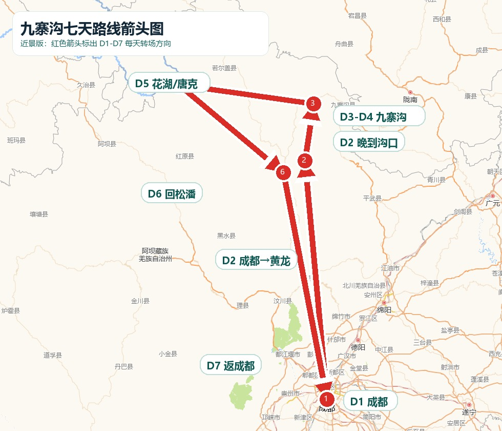
重点：顺利抵达，不赶景点。
今晚住：成都东站圈优先；折中选天府广场/骡马市/文殊院。
连住：成都第1晚，共1晚。
明天出发：06:40左右退房，07:00前后到成都东站。
重点：黄龙五彩池，天黑前到沟口。
今晚住：九寨沟沟口/漳扎镇。
连住：第1晚，共3晚。
明天出发：07:00-07:20去九寨沟景区入口。
重点：五花海、诺日朗、珍珠滩。
今晚住：九寨沟沟口。
连住：第2晚，共3晚。
明天出发：08:00左右，二进沟或沟口休整。
重点：补拍慢走，少折腾。
今晚住：九寨沟沟口。
连住：第3晚，共3晚。
明天出发：08:00左右退房去若尔盖花湖/唐克。
重点：草原、湿地、长车程。
今晚住：唐克看日落更顺；若尔盖县城住宿更稳。
连住：草原线第1晚，共1晚。
明天出发：09:00左右去九曲第一湾/松潘。
重点：九曲观景，返松潘中转。
今晚住：松潘古城主路/川主寺镇主路。
连住：中转第1晚，共1晚。
明天出发：按车次提前60-90分钟去站。
重点：留足中转缓冲。
今晚住：正常不住；晚点严重备成都东站/机场附近。
连住：0晚，兜底才临时住1晚。
明天出发：返程后无下一站，回家休整。
住宿圈对应地图在“住哪里最方便”模块；价格和酒店可订情况以高德/美团/携程实际页面为准。
九寨沟 若尔盖 花湖 黄河九曲 拼车 小团
你好，我们两个人从九寨沟沟口出发，想D5去若尔盖花湖后住唐克或若尔盖，D6去黄河九曲第一湾后送到松潘/川主寺。请问是拼车还是包车？两人总价多少？是否含油费、过路费、停车费、司机餐费和住宿？是否含花湖、九曲门票/观光车/电梯？几点接、几点到、是否走夜路？天气差能否取消或改线？能否平台下单或提供订单凭证？
你好，我们两个人明天想从九寨沟沟口去若尔盖花湖，晚上住唐克或若尔盖，后天再去黄河九曲第一湾并送到松潘/川主寺。酒店有没有正规合作司机或小团？请帮忙确认司机姓名、电话、车牌、接送时间、两人总价、是否含司机食宿和停车费、是否走夜路、天气差能不能改线。
平台下单、有明确订单、路线完整、费用包含项写清楚、不过度走夜路、天气差可改线的方案。
只口头报价、费用包含不清、要求额外承担司机食宿、夜路过多、没有订单凭证的方案。
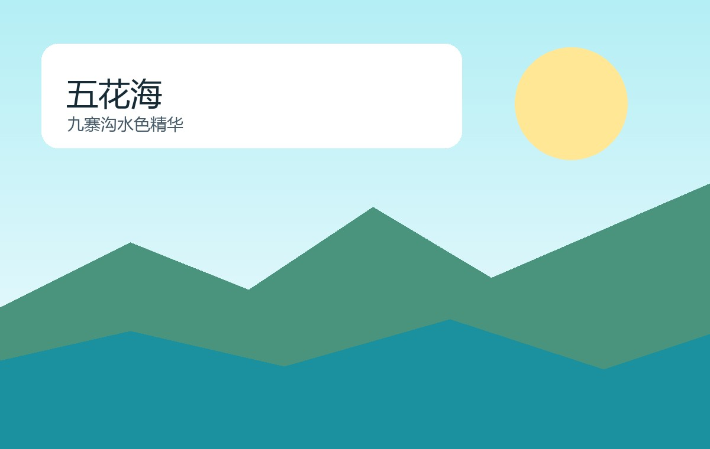
蓝绿海子、瀑布和栈道，是整条线的核心。
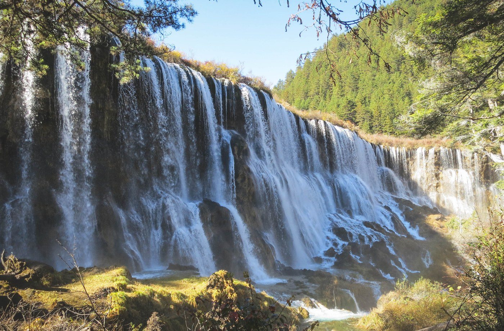
雨天也能看的强景点，水量和声音都很有记忆点。
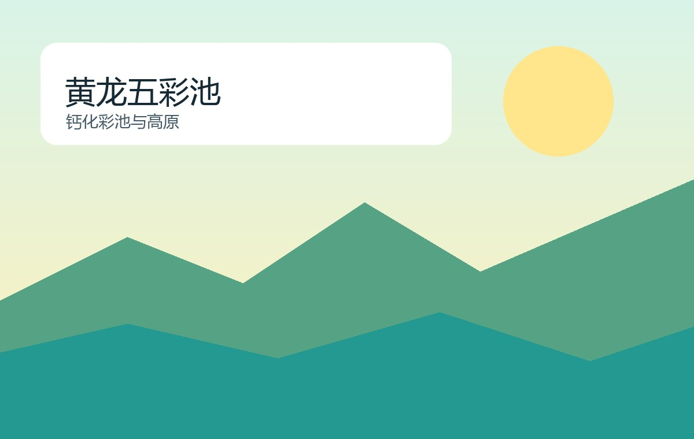
五彩池和钙华池群，注意高海拔慢走。
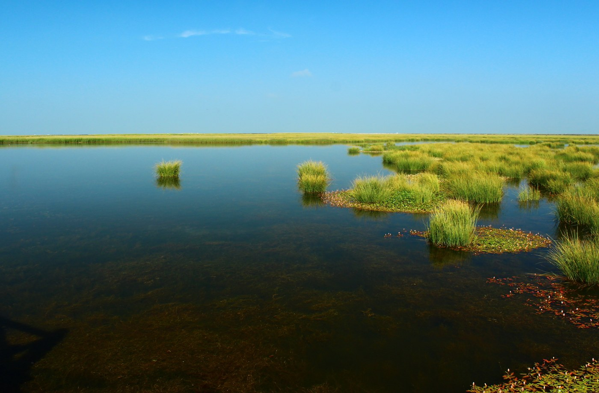
湿地、湖面、草原风，适合慢走栈道。
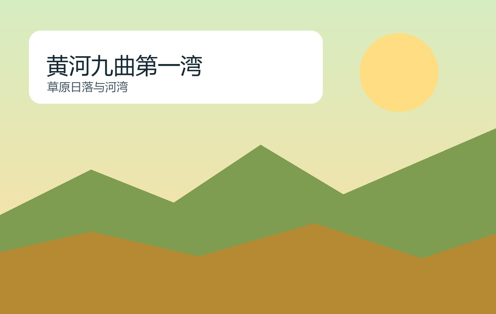
天气好看日落，天气差就短停不硬等。
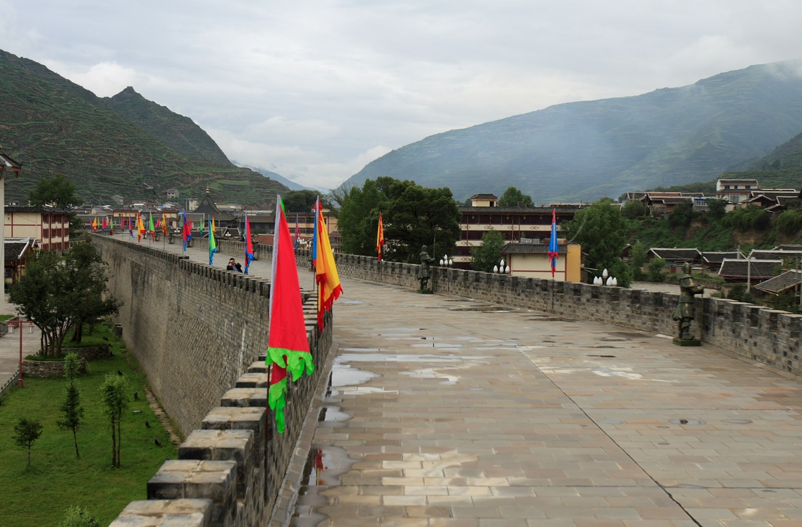
返程前的轻松中转点，适合住一晚恢复体力。
九寨沟、黄龙、花湖、黄河九曲第一湾均以官方/平台当期页面为准，暑期尽早看票。
黄龙和草原线不要跑跳，头痛胸闷就减少游玩并休息。
雨具、薄外套、防晒都要带，草原风大，日落别硬等。
默认选清汤、蒸菜、面食和家常菜，点餐必须强调不要辣椒红油花椒麻油。
真正浮动最大的是包车、暑期住宿和二进沟，别把交通缓冲省掉。
成都东站 清汤面 / 蒸菜 / 清淡家常菜 / 粥粉面
12306 成都东 黄龙九寨站 07:00 09:00
广州白云机场 成都天府机场 成都东站酒店
确认航班、起飞机场、行李规则、成都落地机场和酒店位置。成都酒店订成可免费取消，优先东站圈。
广州白云机场 成都天府机场 成都双流机场 成都东站酒店
从佛山/广州前往广州白云机场，国内航班建议至少提前2小时到机场；不要卡点出发。
广州白云机场 T1 T2
不夜逛。天府/双流机场到达后按高德打车或地铁去酒店，优先住成都东站圈，直接洗漱休息。
成都东站东广场 酒店 评分4.5以上 可取消
核对D2成都东→黄龙九寨站车票、黄龙预约、九寨沟预约和接驳。买不到上午车次就不要硬赶黄龙。
成都东 黄龙九寨站 12306
九寨沟沟口 清汤牦牛肉 / 菌汤锅 / 番茄鸡蛋面 / 清淡餐馆
起床，检查身份证、12306、黄龙预约、雨具、薄外套、充电宝、轻食。
成都东站
酒店出发去成都东站，建议预留45-70分钟进站安检和找检票口。
成都东站 进站口
成都东 → 黄龙九寨站，具体车次和票价以12306为准。
12306 成都东 黄龙九寨
黄龙九寨站 → 黄龙景区，选景区接驳/拼车/包车，提前确认上车点。
黄龙九寨站 黄龙景区游客中心
黄龙游玩：索道上行，走五彩池、争艳池等核心，慢慢下行；不跑不硬撑。
黄龙风景区 五彩池
黄龙 → 九寨沟沟口，建议天黑前到酒店。
九寨沟沟口 酒店
沟口晚餐，不辣清淡；买D3进沟轻食和水。
九寨沟沟口 清汤牦牛肉
回酒店休息，确认九寨沟门票、观光车、身份证。
九寨沟景区入口
九寨沟沟口 清汤牦牛肉 / 菌汤锅 / 番茄鸡蛋面 / 清淡餐馆
起床吃早餐，带身份证、水、轻食、雨具、充电宝。
九寨沟沟口 早餐
酒店到景区入口，尽量早到，避开大团高峰。
九寨沟景区入口
日则沟精华：五花海、珍珠滩瀑布、镜海视天气补拍。
九寨沟 五花海 珍珠滩瀑布
诺日朗中心休息/简餐，景区内选择有限，别指望吃得很好。
诺日朗中心
则查洼沟：长海、五彩池，重点看水色，不每个点停太久。
九寨沟 长海 五彩池
树正沟：树正群海、芦苇海/盆景滩择一，体力差就提前出沟。
九寨沟 树正群海
沟口晚餐，不辣清淡，早睡。
九寨沟沟口 清淡晚餐
九寨沟沟口 清汤牦牛肉 / 菌汤锅 / 番茄鸡蛋面 / 清淡餐馆
花湖 黄河九曲第一湾 唐克 若尔盖 松潘 拼车 包车 小团
比D3晚一点出发，先看天气和体力。
九寨沟景区入口
补五花海/镜海，晴天拍水色，阴天拍树林和瀑布。
九寨沟 镜海 五花海
诺日朗休息，吃自带轻食。
诺日朗中心
树正沟慢走：芦苇海、盆景滩、树正群海择重点。
九寨沟 芦苇海 盆景滩
提前出沟休息，买D5草原线水和零食。
九寨沟沟口 超市
不二进沟：睡到自然醒，沟口休整，或查当天开放交通后选甲勿海/中查沟轻松点。
九寨沟沟口 甲勿海 中查沟
唐克 清汤牦牛肉 / 若尔盖 面食 清淡 / 若尔盖 酸奶 青稞饼
退房出发，带晕车药、水、零食、外套。
九寨沟沟口
九寨沟到若尔盖方向，优先包车/拼车/小团，价格和路线出发前确认。
九寨沟 若尔盖 花湖
路上或若尔盖简餐，不吃辣，别点凉拌牦牛肉。
若尔盖 清汤面
花湖游玩：湿地栈道、湖面、草原、牛羊，风大注意保暖。
若尔盖 花湖景区
前往唐克/若尔盖住宿，尽量天黑前到。
唐克镇 酒店 / 若尔盖镇 酒店
晚餐清淡，准备D6九曲第一湾和返松潘。
唐克 清汤牦牛肉
松潘 菌汤锅 清淡 / 川主寺 清汤牦牛肉 / 松潘 面食 不辣
早餐后出发，不用太早赶，先看天气。
唐克镇 / 若尔盖镇
黄河九曲第一湾游玩，走观景台/栈道/电梯按当日开放。
黄河九曲第一湾
午餐清淡，补水，防晒防风。
唐克 清淡餐
前往松潘/川主寺，尽量天黑前到。
松潘古城 川主寺 酒店
松潘古城轻逛，别走太晚。
松潘古城
确认接驳车/包车到站时间，查12306和航班。
12306 黄龙九寨站 松潘站
酒店退房，去黄龙九寨站/松潘站，按车次预留足够时间。
黄龙九寨站 / 松潘站
高铁回成都东，车次和票价以12306为准。
成都东站
航班早：直接去机场；航班晚：成都东附近吃饭休息，不跑远。
成都天府机场 / 成都双流机场
成都 → 广州/佛山，落地后再回家。
广州白云机场 / 佛山
广州白云机场 成都天府机场 成都双流机场 成都东站酒店
成都东站 东广场 进站口
12306 成都东 黄龙九寨站
黄龙九寨站 黄龙游客中心
黄龙景区 九寨沟沟口 酒店
九寨沟景区入口
九寨沟 花湖 唐克 若尔盖 拼车
唐克 若尔盖 松潘 川主寺
松潘站 黄龙九寨站 成都东 成都天府机场
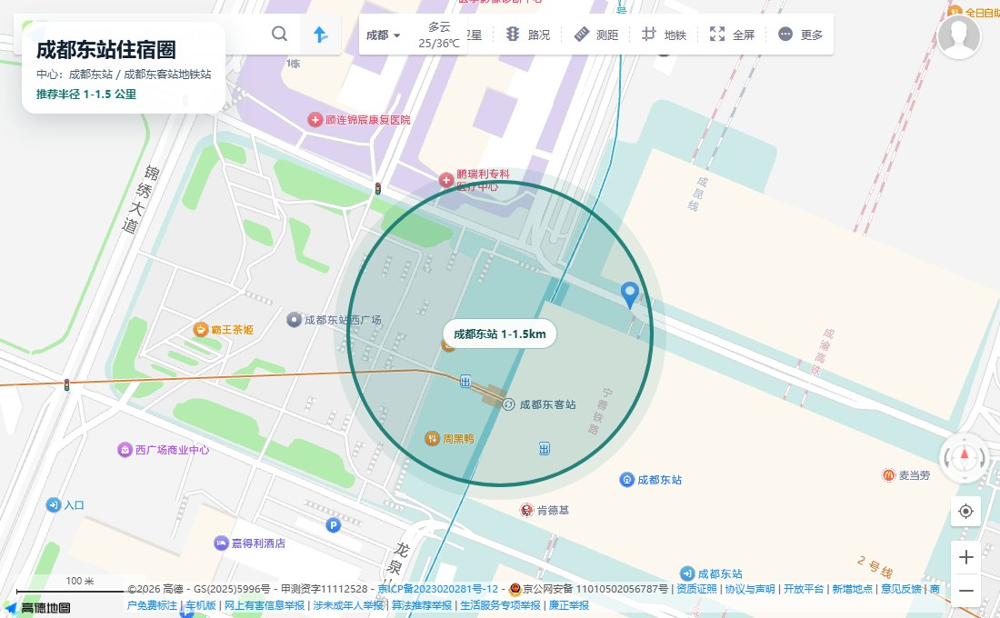
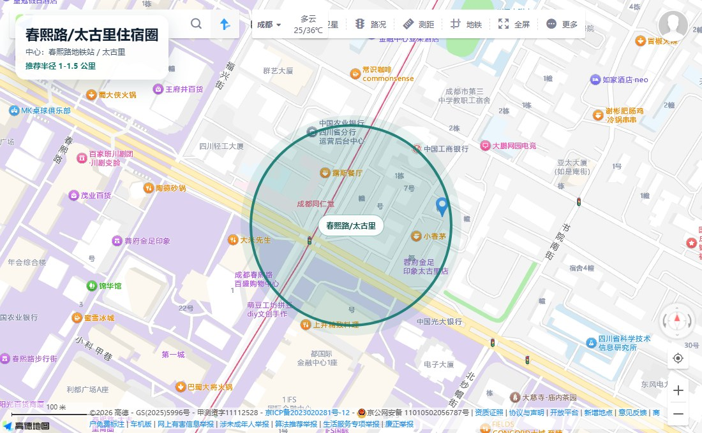
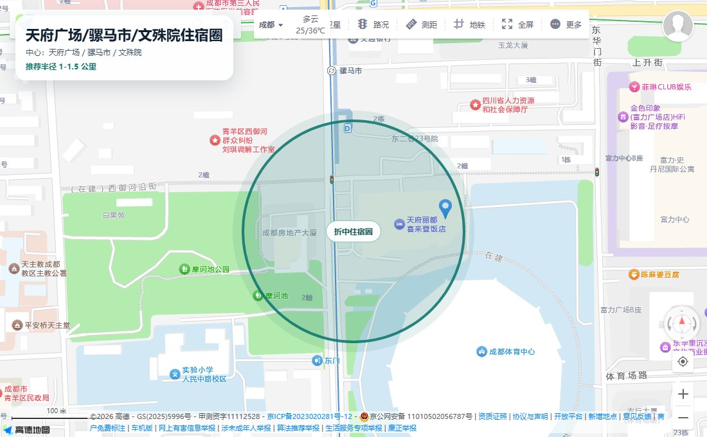
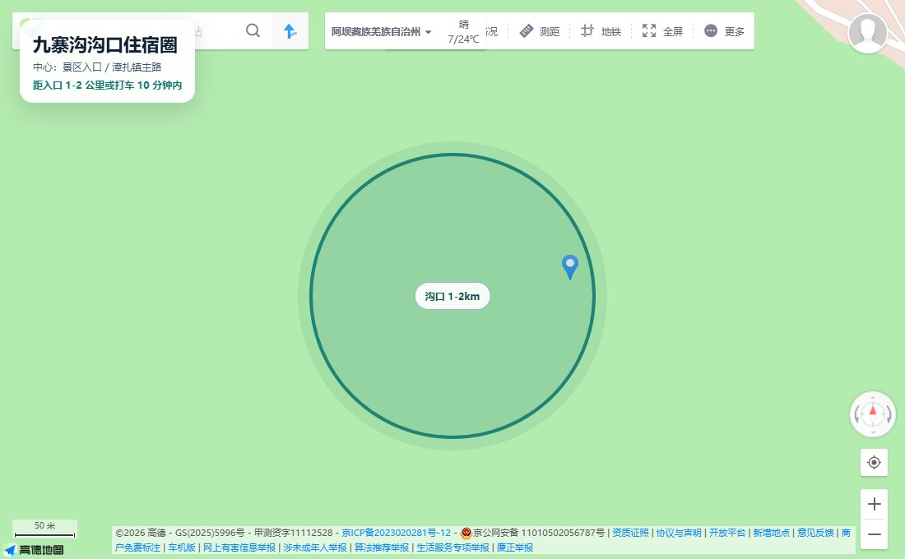
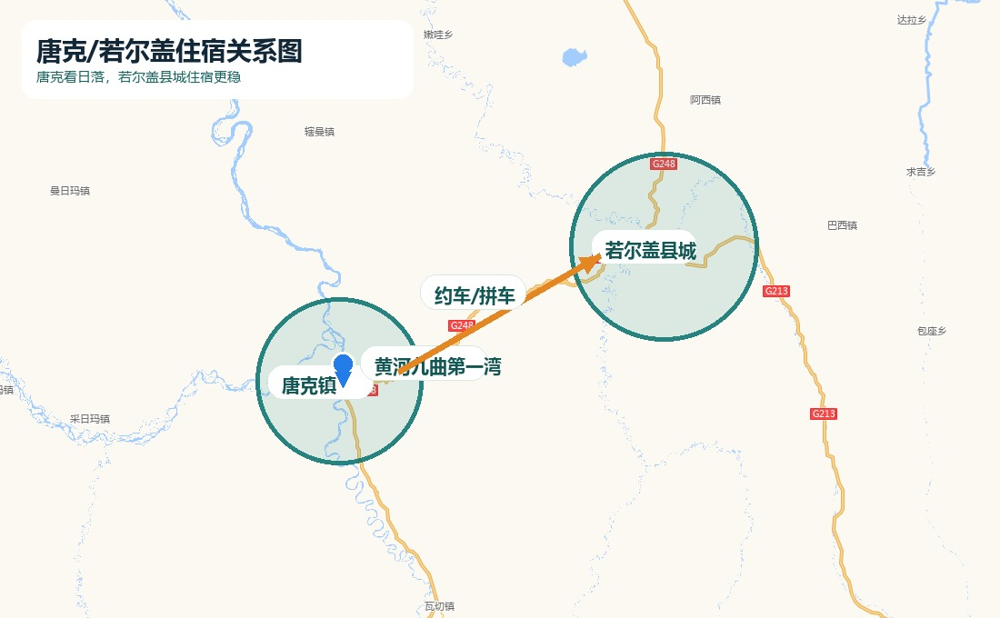
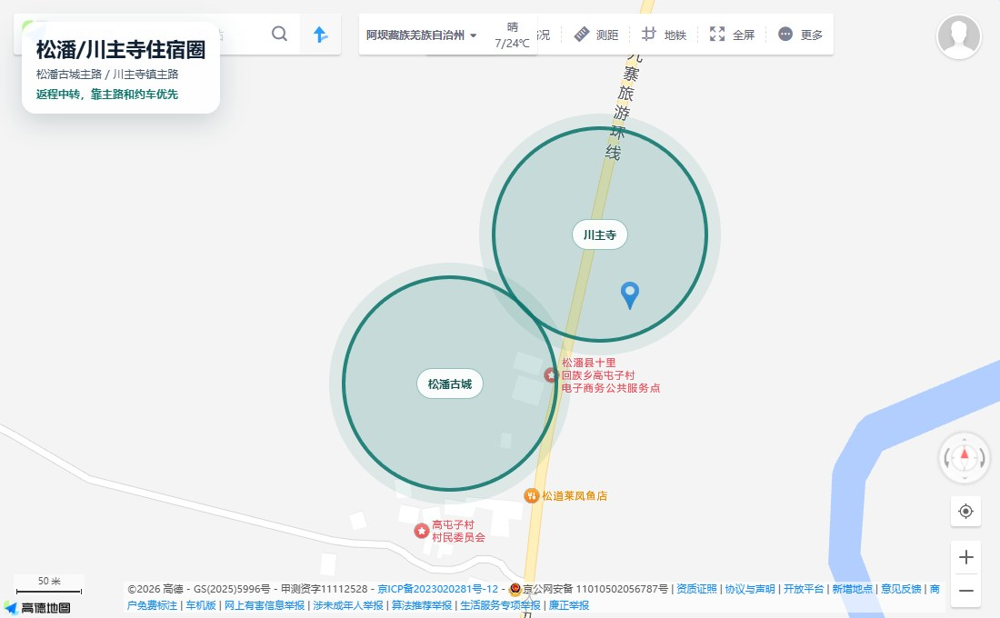
地图底图来源：高德地图网页截图；住宿圈为本攻略叠加的半透明范围标注。酒店最终位置请以高德/美团/携程实际页面为准。
九寨沟景区入口 五花海 珍珠滩瀑布 诺日朗中心
黄龙风景区游客中心 五彩池 索道上行
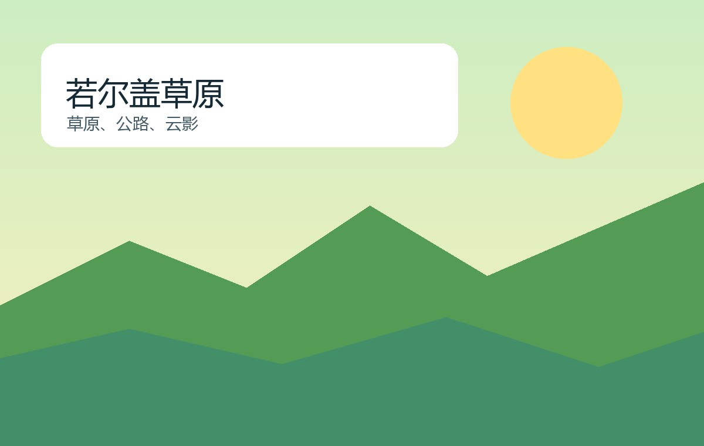
若尔盖大草原 唐克镇 若尔盖县城
若尔盖花湖景区游客中心
黄河九曲第一湾景区 唐克镇
松潘古城 主路 酒店
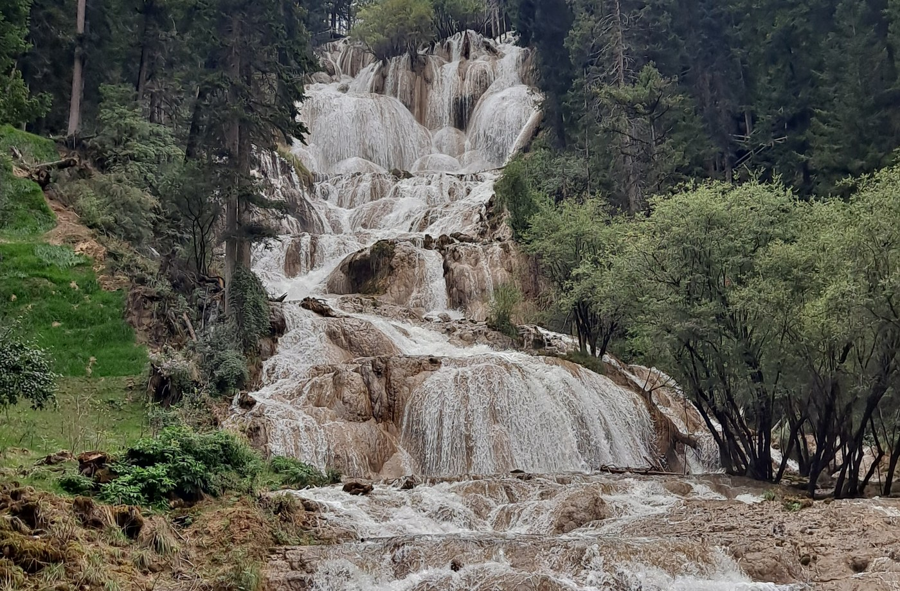
牟尼沟扎嘎瀑布
黄龙九寨站 松潘站 川主寺镇
九寨沟景区入口
黄龙风景区游客中心
若尔盖大草原
若尔盖花湖景区游客中心
黄河九曲第一湾景区
牟尼沟扎嘎瀑布
松潘古城
黄龙九寨站 / 松潘站 / 川主寺镇
避开火锅、串串、冒菜、红油抄手；吃清汤抄手、炖汤、蒸菜、清汤面、粤菜/家常菜。
晚餐吃清汤牦牛肉锅/菌汤锅/番茄鸡蛋面，不放辣椒和花椒。
自带面包/饭团/牛奶/巧克力；晚餐回沟口吃清淡汤锅/面食。
继续自带轻食；晚餐清淡，别点红油凉菜和麻辣牦牛肉干。
清汤牦牛肉、面食、青稞饼、酸奶；烧烤和凉菜先问是否辣。
松潘吃菌汤锅/清汤牦牛肉/蒸菜，继续强调不要辣椒红油花椒。
成都东/机场吃清淡简餐，别为了最后一顿跑远。
区间用于首页快速判断；航班、草原线用车、暑期沟口住宿和景区付款页变化后必须按真实订单重算。
D1晚到就取消春熙路/太古里，直接住成都东附近；若影响D2早车，优先改签成都东到黄龙九寨站更晚车次或D2只去沟口不进黄龙。
先查黄龙九寨站、松潘站、黄胜关站和前后日期；仍没票则改成都多住一晚，黄龙和九寨顺延，不买时间过紧的票。
立刻停下休息，走慢，减少拍照点；只看五彩池核心，必要时直接下撤去游客中心或去沟口酒店休息。
保留瀑布、森林、五花海核心；水色差就少拍远景，多看珍珠滩和诺日朗；提前出沟休息。
早到景区，先坐观光车到深处核心点；每个点拍到就走，不逆人流硬挤。
取消D4二进沟，改沟口休整/甲勿海/中查沟/华美胜地轻松版；省下门票观光车预算。
直接取消若尔盖花湖和黄河九曲第一湾，改松潘古城+牟尼沟轻松版；优点少坐车更稳，缺点少了大草原。
花湖短走栈道，九曲不等日落，早点住松潘/川主寺；把期待改成草原车观和休息。
不要勉强吃，直接请店员重做或换清汤面/白米饭/蒸蛋/炒青菜；保留点餐话术截图给店员看。
能免费取消就重订主路/景区入口附近；不能退就减少往返，行李寄存酒店或车站。
每天出门满电+充电宝；低于30%开省电，少拍视频；景区服务点、游客中心、商场或酒店前台找租借充电宝。
优先酒店寄存；九寨沟进沟别带箱子；车站转场问官方寄存或高德搜行李寄存。
先删D4二进沟，再删花湖/九曲草原线，保留黄龙和九寨沟一进沟核心。
先压住宿和包车，再取消二进沟/草原线；不要压高铁航班缓冲和安全接驳。